Anatomical
Brain mask
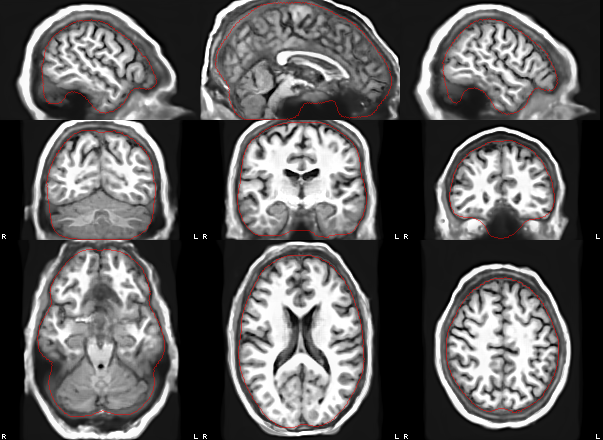
Grey matter
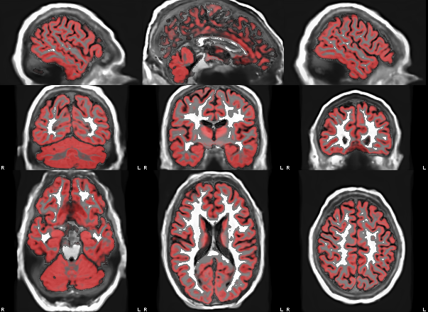
Normalisation to MNI152NLin2009cAsym
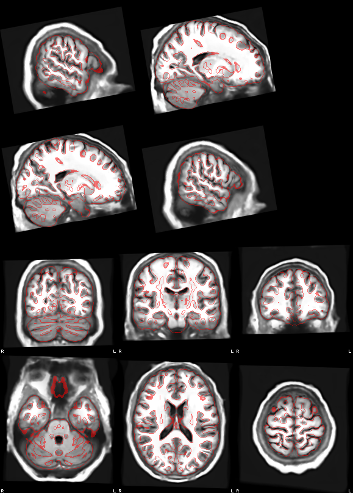
Run 1: rest
Reference and brain mask
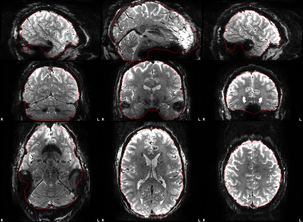
Coregistration to T1w
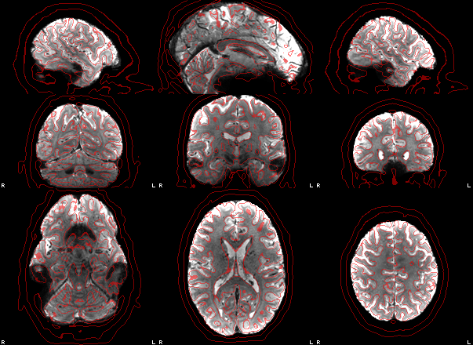
Run 2: rest
Reference and brain mask
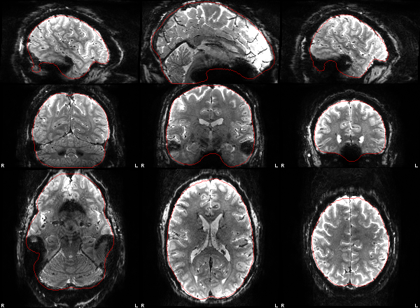
Coregistration to T1w
Run 3: rest
Reference and brain mask
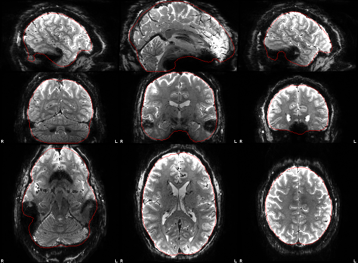
Coregistration to T1w
Run 4: rest
Reference and brain mask
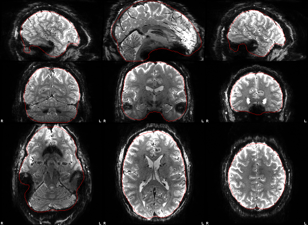
Coregistration to T1w
Run 5: rest
Reference and brain mask
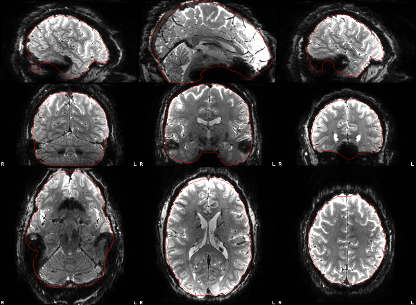
Coregistration to T1w
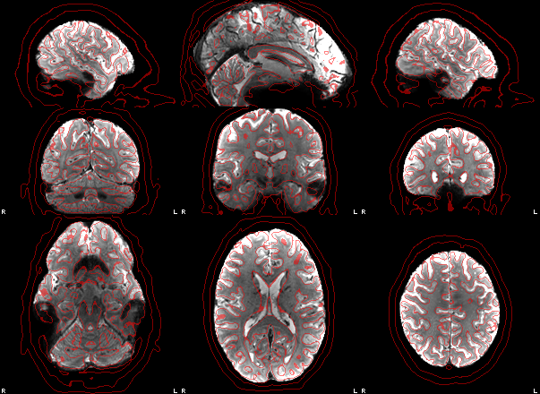
Run 6: rest
Reference and brain mask
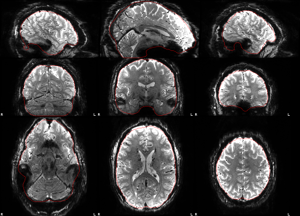
Coregistration to T1w
Run 7: rest
Reference and brain mask
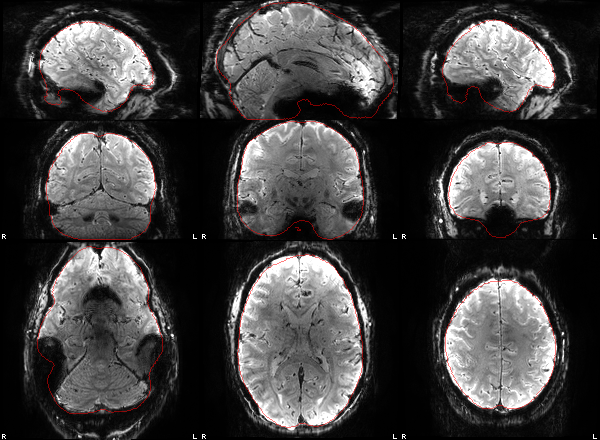
Coregistration to T1w
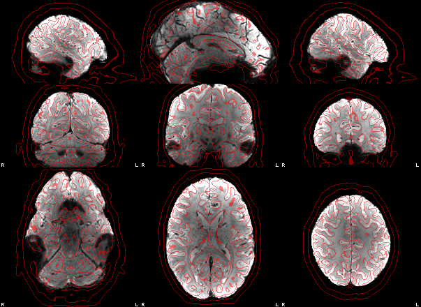
Run 8: rest
Reference and brain mask
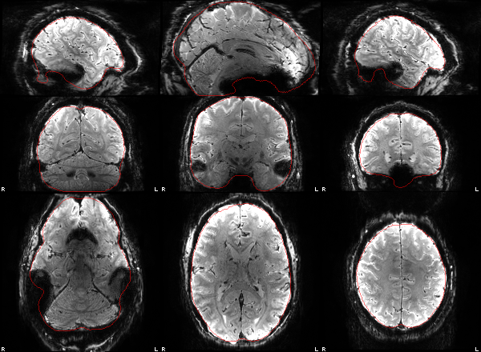
Coregistration to T1w
Run 9: rest
Reference and brain mask
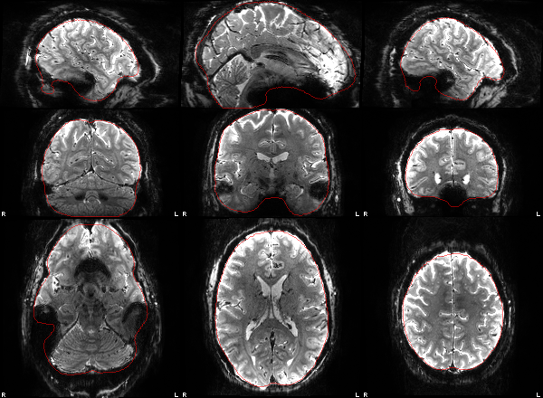
Coregistration to T1w
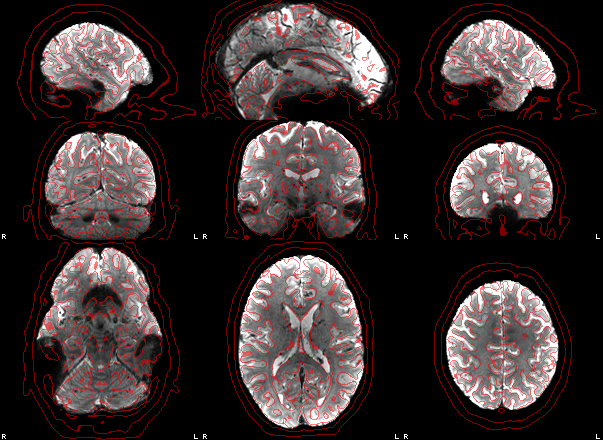
Run 10: rest
Reference and brain mask
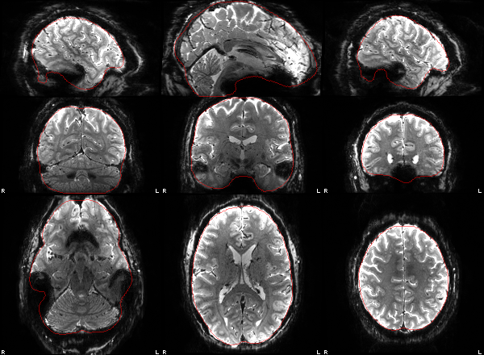
Coregistration to T1w
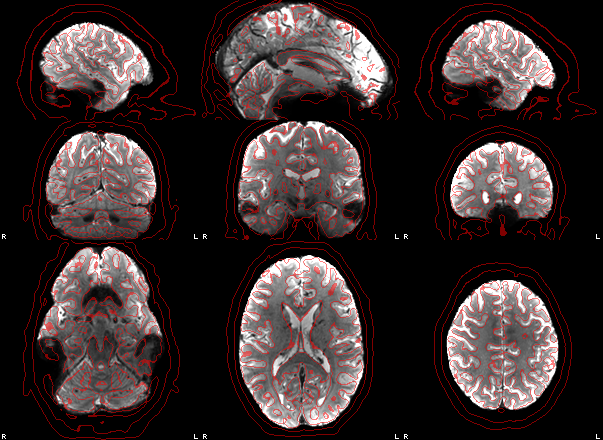
Methods
Imaging procedure
Imaging data were acquired on a Siemens MAGNETOM Terra.X 7 T scanner (receive coil: 8Tx32Rx_Head_C). No anatomical image was acquired. Seven fMRI series (task-rest acq-3d1pt0mm242EPIFATSAT run-01, task-rest acq-3d1pt0mm242EPIFATSAT run-02, task-rest acq-3d1pt0mm242EPIFATSATr64 run-01, task-rest acq-3d1pt0mm242EPIFATSATr64 run-02, task-rest acq-3d1pt0mm242EPIFATSATr64 run-03, task-rest acq-3d1pt0mm242EPIbinomk121 and task-rest acq-3d1pt0mm242EPIbinomk121r64) were acquired with a 3D gradient-echo EPI sequence: TR 3.4 s; TE 22 ms; flip angle 13°; 200×200 matrix; 200×200 mm field of view; 120 1-mm partitions; ×2 in-plane acceleration; anterior-to-posterior phase encoding; 5 volumes. One fMRI series (task-rest acq-3d1pt0mm242EPIFATSATr64 run-04) was acquired with a 3D gradient-echo EPI sequence: TR 3.4 s; TE 22 ms; flip angle 13°; 200×206 matrix; 200×206 mm field of view; 120 1-mm partitions; ×2 in-plane acceleration; anterior-to-posterior phase encoding; 5 volumes. Two fMRI series (task-rest acq-3d1pt0mm242EPIbinomk121NOFATSAT and task-rest acq-3d1pt0mm242EPIbinomk121NOFATSATr64) were acquired with a 3D gradient-echo EPI sequence: TR 3 s; TE 20.6 ms; flip angle 14°; 200×200 matrix; 200×200 mm field of view; 120 1-mm partitions; ×2 in-plane acceleration; anterior-to-posterior phase encoding; 5 volumes.
Preprocessing
Data were preprocessed with fastprep, which follows the fMRIPrep workflow [1] using permissively licensed tools, with voxel-wise operations in niimath [2]. With no anatomical scan, a synthetic T1-weighted image was made from the fMRI: each run's (distortion-corrected) motion-correction reference was rigidly aligned to the first run's with niimath's implementation of AFNI's 3dAllineate [3], the 10 references were averaged, and SynthSR [4] converted the mean into a 1 mm T1-weighted image. It keeps the EPI's geometric distortion, so residual distortion is absorbed by the nonlinear template normalisation, "T1w space" below denotes this EPI-derived space, and no cortical surfaces were reconstructed. The T1-weighted image was cropped to a robust field of view excluding the neck (niimath implementation of FSL's robustfov [5]), corrected for intensity non-uniformity with niimath's implementation of N4 [6], brain-extracted with MindGrab [7], and segmented into grey matter, white matter and cerebrospinal fluid partial-volume maps with the brainchop MindMap model [8]. It was normalised to the MNI152NLin2009cAsym template [9] with Greedy [10]: an affine brain-to-brain registration followed by a diffeomorphic (stationary velocity field) registration, both maximising normalised mutual information.
For each fMRI run, non-steady-state volumes were detected and a reference volume was computed as in fMRIPrep, and head motion was estimated by six-parameter rigid-body registration of every volume to that reference. Susceptibility distortion was handled per run (below). The corrected reference was brain-extracted with MindGrab and registered to the T1-weighted image with niimath's implementation of AFNI's 3dAllineate [3], using the local Pearson correlation cost [11] and a 12-parameter affine transform. Head-motion correction, distortion correction, coregistration and normalisation were composed into a single cubic B-spline interpolation, giving data in T1w space (at the functional resolution) and in MNI152NLin2009cAsym space. Confounds were computed as in fMRIPrep, including framewise displacement and DVARS [12] and anatomical and temporal CompCor components [13]. Temporal SNR was the mean divided by the residual standard deviation after regressing polynomial trends and the six motion parameters. No spatial smoothing or temporal filtering was applied.
Distortion correction for task-rest acq-3d1pt0mm242EPIFATSAT run-01, task-rest acq-3d1pt0mm242EPIFATSAT run-02, task-rest acq-3d1pt0mm242EPIFATSATr64 run-01, task-rest acq-3d1pt0mm242EPIFATSATr64 run-02, task-rest acq-3d1pt0mm242EPIFATSATr64 run-03, task-rest acq-3d1pt0mm242EPIFATSATr64 run-04, task-rest acq-3d1pt0mm242EPIbinomk121NOFATSAT, task-rest acq-3d1pt0mm242EPIbinomk121NOFATSATr64, task-rest acq-3d1pt0mm242EPIbinomk121 and task-rest acq-3d1pt0mm242EPIbinomk121r64: no distortion correction was applied.
References
- Esteban O, Markiewicz CJ, Blair RW, et al. fMRIPrep: a robust preprocessing pipeline for functional MRI. Nat Methods. 2019;16(1):111-116. doi:10.1038/s41592-018-0235-4
- Rorden C, Webster M, Drake C, et al. niimath and fslmaths: replication as a method to enhance popular neuroimaging tools. Aperture Neuro. 2024;4. doi:10.52294/001c.94384
- Cox RW. AFNI: software for analysis and visualization of functional magnetic resonance neuroimages. Comput Biomed Res. 1996;29(3):162-173.
- Iglesias JE, Billot B, Balbastre Y, et al. SynthSR: a public AI tool to turn heterogeneous clinical brain scans into high-resolution T1-weighted images for 3D morphometry. Sci Adv. 2023;9(5):eadd3607. doi:10.1126/sciadv.add3607
- Jenkinson M, Beckmann CF, Behrens TE, Woolrich MW, Smith SM. FSL. NeuroImage. 2012;62(2):782-790. doi:10.1016/j.neuroimage.2011.09.015
- Tustison NJ, Avants BB, Cook PA, et al. N4ITK: improved N3 bias correction. IEEE Trans Med Imaging. 2010;29(6):1310-1320. doi:10.1109/TMI.2010.2046908
- Fani A, Doan M, Le I, et al. MindGrab: a spectrally-motivated architecture for accessible deep learning in neuroimaging. NeuroImage. 2026;338:122074. doi:10.1016/j.neuroimage.2026.122074
- Plis SM, Masoud M, Hu F, et al. Brainchop: providing an edge ecosystem for deployment of neuroimaging artificial intelligence models. Aperture Neuro. 2024;4. doi:10.52294/001c.123059
- Fonov V, Evans AC, Botteron K, et al. Unbiased average age-appropriate atlases for pediatric studies. NeuroImage. 2011;54(1):313-327. doi:10.1016/j.neuroimage.2010.07.033
- Greedy diffeomorphic registration (Yushkevich PA), Rust implementation greedy-rs. https://github.com/rordenlab/greedy
- Saad ZS, Glen DR, Chen G, et al. A new method for improving functional-to-structural MRI alignment using local Pearson correlation. NeuroImage. 2009;44(3):839-848. doi:10.1016/j.neuroimage.2008.09.037
- Power JD, Barnes KA, Snyder AZ, Schlaggar BL, Petersen SE. Spurious but systematic correlations in functional connectivity MRI networks arise from subject motion. NeuroImage. 2012;59(3):2142-2154. doi:10.1016/j.neuroimage.2011.10.018
- Behzadi Y, Restom K, Liau J, Liu TT. A component based noise correction method (CompCor) for BOLD and perfusion based fMRI. NeuroImage. 2007;37(1):90-101.
Processing steps (192.6 s end to end)
Commands: work/commands.sh; bars: share of wall time (steps overlap).
| tool | output | s | |
|---|---|---|---|
| niimath | sub-crqsmr2_ses-20261012T165911_task-rest_acq-3d1pt0mm242EPIFATSAT_run-01_part-mag_desc-hmc_boldref.nii.gz | 1.3 | |
| niimath | sub-crqsmr2_ses-20261012T165911_task-rest_acq-3d1pt0mm242EPIFATSAT_run-02_part-mag_desc-hmc_boldref.nii.gz | 1.4 | |
| niimath | sub-crqsmr2_ses-20261012T165911_task-rest_acq-3d1pt0mm242EPIFATSATr64_run-01_part-mag_desc-hmc_boldref.nii.gz | 1.4 | |
| brainchop-mindgrab | boldref_brain.nii.gz | 1.6 | |
| niimath | sub-crqsmr2_ses-20261012T165911_task-rest_acq-3d1pt0mm242EPIFATSATr64_run-02_part-mag_desc-hmc_boldref.nii.gz | 1.5 | |
| brainchop-mindgrab | boldref_brain.nii.gz | 3.1 | |
| niimath | sub-crqsmr2_ses-20261012T165911_task-rest_acq-3d1pt0mm242EPIFATSATr64_run-03_part-mag_desc-hmc_boldref.nii.gz | 1.5 | |
| brainchop-mindgrab | boldref_brain.nii.gz | 1.8 | |
| niimath | sub-crqsmr2_ses-20261012T165911_task-rest_acq-3d1pt0mm242EPIFATSATr64_run-04_part-mag_desc-hmc_boldref.nii.gz | 1.3 | |
| brainchop-mindgrab | boldref_brain.nii.gz | 1.8 | |
| niimath | sub-crqsmr2_ses-20261012T165911_task-rest_acq-3d1pt0mm242EPIbinomk121NOFATSAT_part-mag_desc-hmc_boldref.nii.gz | 1.3 | |
| brainchop-mindgrab | boldref_brain.nii.gz | 2.0 | |
| niimath | sub-crqsmr2_ses-20261012T165911_task-rest_acq-3d1pt0mm242EPIbinomk121NOFATSATr64_part-mag_desc-hmc_boldref.nii.gz | 1.4 | |
| brainchop-mindgrab | boldref_brain.nii.gz | 2.0 | |
| niimath | sub-crqsmr2_ses-20261012T165911_task-rest_acq-3d1pt0mm242EPIbinomk121_part-mag_desc-hmc_boldref.nii.gz | 1.3 | |
| brainchop-mindgrab | boldref_brain.nii.gz | 11.4 | |
| niimath | sub-crqsmr2_ses-20261012T165911_task-rest_acq-3d1pt0mm242EPIbinomk121r64_part-mag_desc-hmc_boldref.nii.gz | 1.4 | |
| brainchop-mindgrab | boldref_brain.nii.gz | 3.7 | |
| brainchop-mindgrab | boldref_brain.nii.gz | 2.0 | |
| brainchop-mindgrab | boldref_brain.nii.gz | 5.7 | |
| niimath | synth_src_1.json | 7.9 | |
| niimath | synth_src_2.json | 8.0 | |
| niimath | synth_src_3.json | 7.8 | |
| niimath | synth_src_4.json | 8.0 | |
| niimath | synth_src_5.json | 8.1 | |
| niimath | synth_src_6.json | 8.2 | |
| niimath | synth_src_7.json | 7.9 | |
| niimath | synth_src_8.json | 8.1 | |
| niimath | synth_src_9.json | 8.1 | |
| niimath | synth_src_mean.nii.gz | 0.6 | |
| synthsr | sub-crqsmr2_rec-synthsr_T1w.nii.gz | 3.1 | |
| niimath | sub-crqsmr2_ses-20261012T165911_task-rest_acq-3d1pt0mm242EPIFATSAT_run-02_part-mag_desc-hmc_boldref.nii.gz | 1.4 | |
| brainchop-mindgrab | boldref_brain.nii.gz | 11.4 | |
| niimath | sub-crqsmr2_ses-20261012T165911_task-rest_acq-3d1pt0mm242EPIFATSAT_run-01_part-mag_desc-hmc_boldref.nii.gz | 1.3 | |
| brainchop-mindgrab | boldref_brain.nii.gz | 1.6 | |
| niimath | t1_robustfov.nii.gz | 0.0 | |
| niimath | sub-crqsmr2_rec-synthsr_desc-preproc_T1w.nii.gz | 0.4 | |
| brainchop-mindgrab | t1_brain.nii.gz | 1.6 | |
| greedy-rs | sub-crqsmr2_rec-synthsr_from-T1w_to-MNI152NLin2009cAsym_mode-image_desc-affine_xfm.mat | 1.1 | |
| brainchop-mindmap | pve_gm.nii.gz | 3.5 | |
| niimath | acc_csf.nii.zst | 0.2 | |
| greedy-rs | sub-crqsmr2_rec-synthsr_from-T1w_to-MNI152NLin2009cAsym_mode-image_desc-warp_xfm.nii.gz | 5.4 | |
| greedy-rs | sub-crqsmr2_rec-synthsr_space-MNI152NLin2009cAsym_desc-preproc_T1w.nii.gz | 0.8 | |
| greedy-rs | sub-crqsmr2_rec-synthsr_space-MNI152NLin2009cAsym_desc-brain_mask.nii.gz | 0.2 | |
| niimath | sub-crqsmr2_ses-20261012T165911_task-rest_acq-3d1pt0mm242EPIFATSATr64_run-01_part-mag_desc-hmc_boldref.nii.gz | 1.4 | |
| brainchop-mindgrab | boldref_brain.nii.gz | 3.1 | |
| niimath | coreg_lpc.json | 7.2 | |
| niimath | coreg_lpc.json | 7.4 | |
| niimath | coreg_lpc.json | 7.5 | |
| niimath | coreg_rigid.json | 16.3 | |
| niimath | sub-crqsmr2_ses-20261012T165911_task-rest_acq-3d1pt0mm242EPIFATSATr64_run-02_part-mag_desc-hmc_boldref.nii.gz | 1.5 | |
| brainchop-mindgrab | boldref_brain.nii.gz | 1.8 | |
| niimath | coreg_rigid.json | 16.3 | |
| niimath | coreg_rigid.json | 16.2 | |
| niimath | sub-crqsmr2_ses-20261012T165911_task-rest_acq-3d1pt0mm242EPIFATSATr64_run-03_part-mag_desc-hmc_boldref.nii.gz | 1.5 | |
| brainchop-mindgrab | boldref_brain.nii.gz | 1.8 | |
| niimath | sub-crqsmr2_ses-20261012T165911_task-rest_acq-3d1pt0mm242EPIFATSATr64_run-04_part-mag_desc-hmc_boldref.nii.gz | 1.3 | |
| brainchop-mindgrab | boldref_brain.nii.gz | 2.0 | |
| niimath | coreg_lpc.json | 6.9 | |
| niimath | coreg_lpc.json | 7.2 | |
| niimath | coreg_lpc.json | 7.2 | |
| niimath | coreg_rigid.json | 15.8 | |
| niimath | sub-crqsmr2_ses-20261012T165911_task-rest_acq-3d1pt0mm242EPIbinomk121NOFATSAT_part-mag_desc-hmc_boldref.nii.gz | 1.3 | |
| brainchop-mindgrab | boldref_brain.nii.gz | 2.0 | |
| niimath | coreg_rigid.json | 16.3 | |
| niimath | sub-crqsmr2_ses-20261012T165911_task-rest_acq-3d1pt0mm242EPIbinomk121NOFATSATr64_part-mag_desc-hmc_boldref.nii.gz | 1.4 | |
| brainchop-mindgrab | boldref_brain.nii.gz | 3.7 | |
| niimath | coreg_rigid.json | 16.7 | |
| niimath | sub-crqsmr2_ses-20261012T165911_task-rest_acq-3d1pt0mm242EPIbinomk121_part-mag_desc-hmc_boldref.nii.gz | 1.3 | |
| brainchop-mindgrab | boldref_brain.nii.gz | 5.7 | |
| niimath | coreg_lpc.json | 6.3 | |
| niimath | coreg_lpc.json | 6.9 | |
| niimath | coreg_lpc.json | 6.5 | |
| niimath | coreg_rigid.json | 15.5 | |
| niimath | sub-crqsmr2_ses-20261012T165911_task-rest_acq-3d1pt0mm242EPIbinomk121r64_part-mag_desc-hmc_boldref.nii.gz | 1.4 | |
| brainchop-mindgrab | boldref_brain.nii.gz | 2.0 | |
| niimath | coreg_rigid.json | 15.6 | |
| niimath | coreg_rigid.json | 16.0 | |
| niimath | sub-crqsmr2_ses-20261012T165911_task-rest_acq-3d1pt0mm242EPIFATSAT_run-01_part-mag_desc-confounds_timeseries.tsv | 2.9 | |
| niimath | sub-crqsmr2_ses-20261012T165911_task-rest_acq-3d1pt0mm242EPIFATSAT_run-02_part-mag_desc-confounds_timeseries.tsv | 2.7 | |
| niimath | coreg_lpc.json | 4.0 | |
| niimath | sub-crqsmr2_ses-20261012T165911_task-rest_acq-3d1pt0mm242EPIFATSATr64_run-01_part-mag_desc-confounds_timeseries.tsv | 3.1 | |
| niimath | sub-crqsmr2_ses-20261012T165911_task-rest_acq-3d1pt0mm242EPIFATSATr64_run-02_part-mag_desc-confounds_timeseries.tsv | 3.7 | |
| niimath | sub-crqsmr2_ses-20261012T165911_task-rest_acq-3d1pt0mm242EPIFATSATr64_run-03_part-mag_desc-confounds_timeseries.tsv | 4.1 | |
| niimath | sub-crqsmr2_ses-20261012T165911_task-rest_acq-3d1pt0mm242EPIFATSATr64_run-04_part-mag_desc-confounds_timeseries.tsv | 3.6 | |
| niimath | sub-crqsmr2_ses-20261012T165911_task-rest_acq-3d1pt0mm242EPIbinomk121NOFATSAT_part-mag_desc-confounds_timeseries.tsv | 2.5 | |
| niimath | sub-crqsmr2_ses-20261012T165911_task-rest_acq-3d1pt0mm242EPIbinomk121NOFATSATr64_part-mag_desc-confounds_timeseries.tsv | 2.5 | |
| niimath | sub-crqsmr2_ses-20261012T165911_task-rest_acq-3d1pt0mm242EPIbinomk121_part-mag_desc-confounds_timeseries.tsv | 2.0 | |
| niimath | coreg_rigid.json | 11.0 | |
| niimath | sub-crqsmr2_ses-20261012T165911_task-rest_acq-3d1pt0mm242EPIbinomk121r64_part-mag_desc-confounds_timeseries.tsv | 1.6 | |
| niimath | 23 report figures (-bitmap) | 3.7 | |
| Total | end to end | 192.6 |